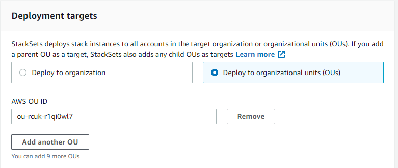

Terjemahan disediakan oleh mesin penerjemah. Jika konten terjemahan yang diberikan bertentangan dengan versi bahasa Inggris aslinya, utamakan versi bahasa Inggris.
Buat set tumpukan
Anda dapat membuat set tumpukan menggunakan AWS Management Console atau menggunakan perintah AWS CloudFormation di AWS CLI. Anda dapat membuat set tumpukan baik dengan izin self-managed atau service-managed.
Dengan self-managed izin, Anda dapat men-deploy instans tumpukan ke spesifik Akun AWS di Wilayah tertentu. Untuk melakukan ini, Anda harus terlebih dahulu membuat peran IAM yang diperlukan untuk membangun hubungan tepercaya antara akun tempat Anda mengelola set tumpukan dan akun tempat Anda men-deploy instans tumpukan.
Dengan service-managed, Anda dapat men-deploy instans tumpukan ke akun yang dikelola oleh AWS Organizations di Wilayah tertentu. Dengan model ini, Anda tidak perlu membuat peran IAM yang diperlukan; StackSets membuat peran IAM atas nama Anda. Anda juga dapat mengaktifkan deployment otomatis ke akun yang ditambahkan ke organisasi target atau unit organisasi (OU) di masa mendatang. Dengan deployment otomatis diaktifkan, StackSets secara otomatis menghapus instans tumpukan dari akun jika dihapus dari organisasi target atau OU.
Topik
Buat set tumpukan dengan izin yang dikelola sendiri
Topik
Buat set tumpukan dengan izin yang dikelola sendiri menggunakan AWS Management Console
Buka AWS CloudFormation konsol di https://console.aws.amazon.com/cloudformation
. -
Dari panel navigasi, pilih StackSets.
-
Di bagian atas StackSetshalaman, pilih Buat StackSet.
-
Dalam Prasyarat - Siapkan templat, pilih Gunakan templat sampel.
-
Dalam Pilih templat sampel, dari menu drop-down pilih Aktifkan templat konfigurasi AWS. Pilih Selanjutnya.

-
Pada halaman Tentukan StackSet detail, berikan informasi berikut.
-
Berikan nama untuk set tumpukan. Nama set tumpukan harus dimulai dengan karakter abjad, dan hanya berisi huruf, angka, dan tanda hubung. Dalam panduan ini, kita menggunakan nama
my-awsconfig-stackset. -
Anda diminta untuk menentukan nilai untuk parameter yang digunakan oleh AWS Config. Untuk informasi lebih lanjut tentang parameter ini, lihat Mengatur Config AWS dengan konsol dalam Panduan Developer AWS Config. Dalam panduan ini, kita akan membiarkan pengaturan default untuk semua parameter AWS Config.
-
Anda dapat mengonfigurasi pembaruan Amazon Simple Notification (SNS) melalui email, berdasarkan konten log, menggunakan TopicARN dan parameter. NotificationEmail Untuk tujuan panduan ini, kami tidak mengkonfigurasi pembaruan Amazon SNS.
-
Anda dapat mengkonfigurasi saluran pengiriman untuk pembaruan dan notifikasi menggunakan parameter Frekuensi DeliveryChannelNamedan. Untuk informasi lebih lanjut tentang saluran pengiriman di AWS Config, lihatMengelola saluran pengiriman dalam Panduan Developer AWS Config. Untuk tujuan panduan ini, kita membiarkan pengaturan default di area ini.
-
-
Setelah selesai menentukan parameter untuk AWS Config, pilih Selanjutnya.
-
Pada halaman StackSet Opsi Konfigurasi, tambahkan tanda dengan menentukan pasangan nilai dan kunci. Dalam panduan ini, kita membuat tanda yang disebut Tahap, dengan nilai Uji. Tanda yang Anda terapkan ke set tumpukan diterapkan untuk semua sumber daya yang dibuat oleh tumpukan Anda. Untuk informasi lebih lanjut tentang cara tanda digunakan dalam AWS, lihat Menggunakan tanda alokasi biaya dalam Panduan Pengguna AWS Billing and Cost Management.
Biarkan Izin tidak ditentukan.
-
Untuk konfigurasi Eksekusi, pilih Aktif sehingga StackSets melakukan operasi yang tidak bertentangan secara bersamaan dan antrian operasi yang bertentangan. Setelah operasi yang saling bertentangan selesai, StackSets mulai operasi antrian dalam urutan permintaan.
catatan
Jika sudah ada operasi yang berjalan atau antrian, StackSets antrian semua operasi yang masuk meskipun tidak bertentangan.
Anda tidak dapat memodifikasi konfigurasi eksekusi set tumpukan Anda saat ada operasi berjalan atau antrian untuk kumpulan tumpukan itu.
-
Pilih Selanjutnya.
-
Pada halaman Atur opsi deployment, berikan akun dan Wilayah tempat Anda ingin tumpukan di set tumpukan Anda di-deploy.
AWS CloudFormation akan men-deploy tumpukan di akun yang ditentukan dalam Wilayah pertama, kemudian pindah ke Wilayah berikutnya, dan seterusnya, selama kegagalan deployment Wilayah tidak melebihi toleransi kegagalan yang ditentukan.
-
Untuk Akun, pilih Deploy tumpukan di akun. Tempelkan angka akun target Anda di kotak teks, pisahkan beberapa angka dengan koma.
-
Untuk Tentukan wilayah, pilih Wilayah US East (N. Virginia). Ulangi untuk Wilayah Barat AS (Oregon). Pilih panah ke atas di Wilayah Barat AS (Oregon) untuk memindahkannya menjadi entri pertama dalam daftar. Urutan Wilayah dalam Tentukan wilayah menentukan urutan deployment mereka.
-
Untuk Opsi deployment:
-
Untuk akun bersamaan maksimum, pertahankan default Nomor dan 1.
Ini berarti bahwa AWS CloudFormation men-deploy tumpukan Anda hanya dalam satu akun pada satu waktu.
-
UntukToleransi kegagalan, jaga agar default tetap Angka dan 0.
Ini berarti bahwa maksimum deployment satu tumpukan dapat gagal di salah satu Wilayah yang Anda tentukan sebelum AWS CloudFormationberhenti deployment di Wilayah saat ini, dan membatalkan deployment di Wilayah yang tersisa.
-
-
Untuk Konkurensi wilayah:
-
Pilih Berurutan atau Paralel Untuk menentukan perintah deployment StackSets untuk Wilayah yang ditentukan. Secara default, Berurutan dipilih.
Pilih Selanjutnya.
-

-
-
Pada halaman Tinjau, tinjau pilihan Anda dan properti set tumpukan Anda. Untuk membuat perubahan, pilih Edit di area tempat Anda ingin mengubah properti. Sebelum Anda dapat membuat set tumpukan, Anda harus mengisi kotak centang di area Kemampuan untuk mengakui bahwa beberapa sumber daya yang Anda buat dengan set tumpukan mungkin memerlukan sumber daya dan izin IAM baru. Untuk informasi selengkapnya tentang izin yang berpotensi diperlukan, lihat Mengakui sumber daya IAM di AWS CloudFormation templat dalam panduan ini. Saat Anda siap untuk membuat set tumpukan Anda, pilih Kirim.

-
AWS CloudFormation mulai membuat set tumpukan Anda. Lihat kemajuan dan status pembuatan tumpukan di set tumpukan Anda di halaman detail set tumpukan yang terbuka saat Anda memilih Kirim.

Buat set tumpukan dengan izin yang dikelola sendiri menggunakan AWS CLI
Ketika Anda membuat set tumpukan dengan menggunakan perintahAWS CLI, Anda menjalankan dua perintah terpisah: create-stack-set untuk mengunggah templat anda dan membuat kontainer set tumpukan, dan create-stack-instances untuk membuat tumpukan dalam set tumpukan Anda. Mulai dengan menjalankan perintah AWS CLI, create-stack-set, untuk mengunggah template AWS CloudFormation sampel yang mengaktifkan AWS Config, lalu mulai pembuatan set tumpukan.
-
Buka AWS CLI.
-
Jalankan perintah berikut.
Untuk
--template-urlparameter, berikan URL bucket Amazon S3 tempat Anda menyimpan templat Anda. Untuk panduan ini, kita menggunakanmy-awsconfig-stacksetsebagai nilai parameter--stack-set-name. Kami juga mengaktifkan--managed-executionsehingga StackSets melakukan operasi yang tidak bertentangan secara bersamaan dan antrian operasi yang saling bertentangan. Setelah operasi yang saling bertentangan selesai, StackSets mulai operasi antrian dalam urutan permintaan.catatan
Jika sudah ada operasi yang berjalan atau antrian, StackSets antrian semua operasi yang masuk meskipun tidak bertentangan.
Anda tidak dapat memodifikasi konfigurasi eksekusi set tumpukan Anda saat ada operasi berjalan atau antrian untuk kumpulan tumpukan itu.
aws cloudformation create-stack-set \ --stack-set-name my-awsconfig-stackset \ --template-url https://s3.amazonaws.com/cloudformation-stackset-sample-templates-us-east-1/EnableAWSConfig.yml -
Setelah perintah
create-stack-setAnda selesai, jalankan perintahlist-stack-setsuntuk melihat bahwa set tumpukan Anda telah dibuat. Anda akan melihat set tumpukan baru Anda set di hasil.aws cloudformation list-stack-sets -
Jalankan perintah AWS CLI
create-stack-instancesuntuk menambahkan instans tumpukan ke set tumpukan Anda. Dalam panduan ini, kita menggunakanus-west-2danus-east-1sebagai nilai parameter--regions.Atur toleransi kegagalan dan akun bersamaan maksimum dengan mengatur
FailureToleranceCountke0danMaxConcurrentCountke1dalam parameter--operation-preferences, seperti yang ditunjukkan dalam contoh berikut. Untuk menerapkan persentase, gunakanFailureTolerancePercentageatauMaxConcurrentPercentage. Untuk tujuan panduan ini, kita menggunakan jumlah, bukan persentase.catatan
Nilai
MaxConcurrentCounttergantung pada nilaiFailureToleranceCount.MaxConcurrentCountpaling banyak satu lebih dariFailureToleranceCount.aws cloudformation create-stack-instances \ --stack-set-name my-awsconfig-stackset \ --accounts '["account_ID_1","account_ID_2"]' \ --regions '["region_1","region_2"]' \ --operation-preferences FailureToleranceCount=0,MaxConcurrentCount=1catatan
Konkurensi deployment StackSet instans dalam operasi tergantung pada nilai
FailureToleranceCount-MaxConcurrentCountdan paling banyak satu lebih dari.FailureToleranceCountpenting
Tunggu sampai operasi selesai sebelum memulai yang lain. Anda hanya dapat menjalankan satu operasi dalam satu waktu.
-
Verifikasi bahwa instans tumpukan berhasil dibuat. Jalankan
DescribeStackSetOperationdenganoperation-idyang dikembalikan sebagai bagian dari output langkah 4.aws cloudformation describe-stack-set-operation \ --stack-set-name my-awsconfig-stackset \ --operation-idoperation_ID
Buat set tumpukan dengan izin yang dikelola layanan
Topik
Pertimbangan saat membuat set tumpukan dengan izin yang dikelola layanan
Sebelum Anda membuat set tumpukan dengan izin yang dikelola layanan, pertimbangkan hal berikut:
-
Set tumpukan dengan izin yang dikelola layanan dibuat di akun manajemen, termasuk set tumpukan yang dibuat oleh administrator yang didelegasikan.
-
Set tumpukan Anda dapat menargetkan seluruh organisasi Anda atau unit organisasi tertentu (OU). Jika set tumpukan Anda menargetkan organisasi Anda, set tumpukan tersebut juga menargetkan semua akun di semua OU di organisasi. Jika target set tumpukan Anda ditentukan OU, target set tumpukan tersebut juga menargetkan semua akun di OU tersebut.
-
Jika set tumpukan Anda menargetkan OU induk, set tumpukan juga menargetkan OU anak.
-
Beberapa set tumpukan dapat menargetkan organisasi atau OU yang sama.
-
Set tumpukan Anda tidak dapat menargetkan akun di luar organisasi Anda.
-
Set tumpukan Anda tidak dapat men-deploy tumpukan nest.
-
StackSets tidak men-deploy instans tumpukan ke akun manajemen organisasi, bahkan jika akun manajemen berada di organisasi Anda atau di OU di organisasi Anda.
-
Deployment otomatis diatur pada tingkat set tumpukan. Anda tidak dapat menyesuaikan deployment otomatis secara selektif untuk OU, akun, atau Wilayah.
-
Izin dari entitas utama IAM (pengguna, peran, atau grup) yang Anda gunakan untuk masuk ke akun manajemen menentukan apakah Anda berwenang untuk men-deploy. StackSets Misalnya kebijakan IAM yang memberikan izin untuk men-deploy ke organisasi, lihat. Contoh kebijakan yang memberikan izin set tumpukan yang dikelola layanan
-
Administrator yang didelegasikan memiliki izin penuh untuk men-deploy ke akun di organisasi Anda. Akun manajemen tidak dapat membatasi izin administrator yang didelegasikan untuk men-deploy ke OU tertentu atau untuk melakukan operasi set tumpukan tertentu.
Buat set tumpukan dengan izin yang dikelola layanan menggunakan konsol AWS CloudFormation
-
Buka AWS CloudFormation konsol di https://console.aws.amazon.com/cloudformation
. -
Dari panel navigasi, pilih StackSets.
-
Di bagian atas StackSetshalaman, pilih Buat StackSet.
-
Dalam Siapkan templat, pilih Templat sudah siap.
-
Dalam Tentukan templat, pilih untuk menentukan URL untuk bucket S3 yang berisi templat tumpukan Anda atau unggah file templat tumpukan. Pilih Selanjutnya.
-
Pada halaman Tentukan StackSet detail, berikan nama untuk set tumpukan, tentukan parameter, dan kemudian pilih Selanjutnya.
-
Pada halaman StackSet Opsi Konfigurasi, dalam Tanda, tentukan tanda untuk diterapkan ke sumber daya di tumpukan Anda.
-
Dalam Izin, pilih Izin yang dikelola layanan.
Jika akses tepercaya dengan AWS Organizations dinonaktifkan, banner akan ditampilkan. Akses tepercaya diperlukan untuk membuat atau memperbarui set tumpukan dengan izin yang dikelola layanan. Hanya administrator di akun manajemen organisasi yang memiliki izin untukAktifkan akses tepercaya dengan AWS Organizations.

-
Untuk konfigurasi Eksekusi, pilih Aktif sehingga StackSets melakukan operasi yang tidak bertentangan secara bersamaan dan antrian operasi yang bertentangan. Setelah operasi yang saling bertentangan selesai, StackSets mulai operasi antrian dalam urutan permintaan.
catatan
Jika sudah ada operasi yang berjalan atau antrian, StackSets antrian semua operasi yang masuk meskipun tidak bertentangan.
Anda tidak dapat memodifikasi konfigurasi eksekusi set tumpukan Anda saat ada operasi berjalan atau antrian untuk kumpulan tumpukan itu.
-
Pilih Selanjutnya untuk melanjutkan dan mengaktifkan akses tepercaya jika belum diaktifkan.
-
Pada halaman Atur opsi deployment, dalam Target deployment, pilih akun di organisasi Anda untuk men-deploy.
-
Pilih Deploy ke organisasi untuk men-deploy ke semua akun di organisasi Anda.

-
Pilih Deploy ke unit organisasi (OU) untuk men-deploy ke semua akun di OU tertentu. Pilih Tambahkan OU, dan kemudian tempelkan ID OU target dalam kotak teks. Ulangi untuk setiap OU target baru.

-
-
Dalam Deployment otomatis, pilih apakah StackSets akan secara otomatis men-deploy ke akun yang ditambahkan ke organisasi target atau OU di masa mendatang.

-
Jika Anda mengaktifkan deployment otomatis, dalam Perilaku penghapusan akun, pilih apakah sumber daya tumpukan dipertahankan atau dihapus ketika akun dihapus dari organisasi atau OU target.

catatan
Dengan Pertahankan tumpukan dipilih, instans tumpukan dihapus dari set tumpukan Anda, tetapi tumpukan dan sumber daya yang berhubungan dipertahankan. Sumber daya tetap dalam statusnya saat ini, tetapi tidak akan lagi menjadi bagian dari set tumpukan.
-
Dalam Wilayah deployment, pilih Wilayah tempat Anda ingin menerapkan instans tumpukan. Pilih Selanjutnya.
-
Pada halaman Tinjau, verifikasi bahwa StackSets akan men-deploy ke akun yang benar di Wilayah yang benar, dan kemudian pilih Buat StackSet.
Halaman StackSet detail terbuka. Anda dapat melihat kemajuan dan status pembuatan tumpukan di set tumpukan Anda.
Buat set tumpukan dengan izin yang dikelola layanan menggunakan AWS CLI
Ketika Anda membuat set tumpukan menggunakan AWS CLI, Anda menjalankan dua perintah terpisah. Selama create-stack-set, Anda mengunggah templat Anda, membuat kontainer set tumpukan, dan mengelola deployment otomatis. Selama create-stack-instances, Anda membuat instans tumpukan di akun target tertentu.
Saat bertindak sebagai administrator yang didelegasikan, Anda harus mengatur --call-as parameter untuk DELEGATED_ADMIN setiap kali Anda menjalankan StackSets perintah.
--call-asDELEGATED_ADMIN
Stack set yang dibuat oleh administrator yang didelegasikan dibuat di akun manajemen organisasi.
-
Buka AWS CLI.
-
Jalankan perintah
create-stack-set.Pada contoh berikut, kita mengaktifkan deployment otomatis untuk mengizinkan StackSets men-deploy secara otomatis ke akun yang ditambahkan ke organisasi atau OU target di masa mendatang. Kita mempertahankan sumber daya tumpukan ketika akun dihapus dari organisasi target atau OU. Kami juga mengaktifkan
--managed-executionsehingga StackSets melakukan operasi yang tidak bertentangan secara bersamaan dan antrian operasi yang saling bertentangan. Setelah operasi yang saling bertentangan selesai, StackSets mulai operasi antrian dalam urutan permintaan.catatan
Jika sudah ada operasi yang berjalan atau antrian, StackSets antrian semua operasi yang masuk meskipun tidak bertentangan.
Anda tidak dapat memodifikasi konfigurasi eksekusi set tumpukan Anda saat ada operasi berjalan atau antrian untuk kumpulan tumpukan itu.
aws cloudformation create-stack-set \ --stack-set-nameStackSet_myApp\ --template-urlhttps://s3.us-west-2.amazonaws.com/cloudformation-templates-us-west-2/MyApp.template\ --permission-modelSERVICE_MANAGED\ --auto-deployment Enabled=true,RetainStacksOnAccountRemoval=true -
Setelah perintah
create-stack-setAnda selesai, jalankan perintahlist-stack-setsuntuk mengkonfirmasi bahwa set tumpukan Anda telah dibuat. Set tumpukan baru Anda tercantum di hasil.aws cloudformation list-stack-sets-
Jika Anda mengatur
--call-asparameterDELEGATED_ADMINsaat masuk ke akun anggota Anda,list-stack-setsmengembalikan semua set tumpukan dengan izin yang dikelola layanan di akun manajemen organisasi. -
Jika Anda mengatur parameter
--call-askeSELFsaat masuk ke akun AWS,list-stack-setsmengembalikan semua set tumpukan yang dikelola sendiri di akun AWS Anda. -
Jika Anda menyetel
--call-asparameterSELFsaat masuk ke akun manajemen organisasi,list-stack-setsmengembalikan semua kumpulan tumpukan di akun manajemen organisasi.
-
-
Jalankan perintah
create-stack-instancesuntuk menambahkan instans tumpukan ke set tumpukan Anda. Untuk parameter--deployment-targets, tentukan ID root organisasi untuk men-deploy ke semua akun di organisasi Anda, atau tentukan ID OU untuk men-deploy ke semua akun di OU tersebut. Dalam contoh ini, kita menentukan OU dengan IDou-rcuk-1x5j1lwodanou-rcuk-slr5lh0a.aws cloudformation create-stack-instances --stack-set-nameStackSet_myApp--deployment-targets OrganizationalUnitIds='["ou-rcuk-1x5j1lwo", "ou-rcuk-slr5lh0a"]' --regions '["eu-west-1"]'penting
Tunggu sampai operasi selesai sebelum memulai yang lain. Anda hanya dapat menjalankan satu operasi dalam satu waktu.
-
Dengan menggunakan
operation-idyang dikembalikan sebagai bagian dari outputcreate-stack-instancesdalam langkah 4, jalankandescribe-stack-set-operationuntuk memverifikasi bahwa instans tumpukan Anda berhasil dibuat.